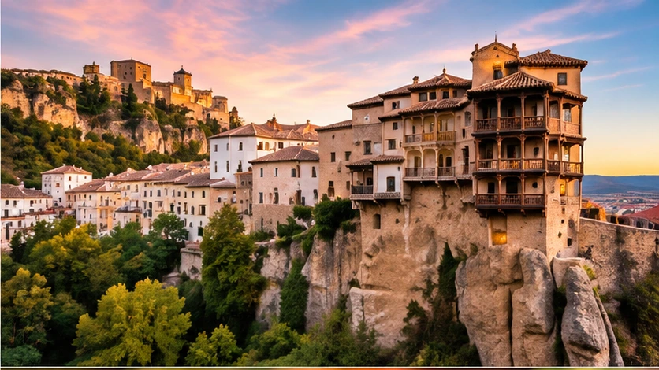
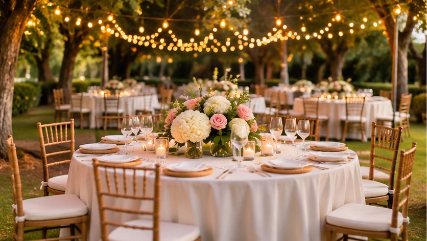
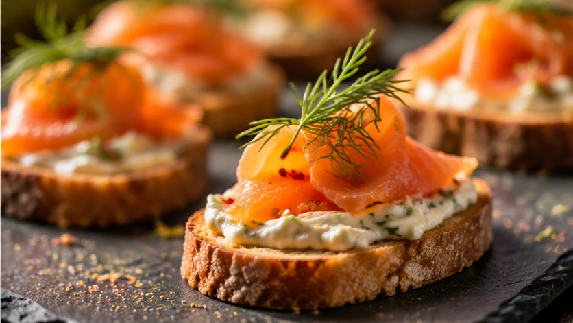

Viajes y Turismo
Experiencias que te llevan más lejos
Descubre destinos, escapadas y experiencias que te invitan a conocer nuevos lugares, culturas y tradiciones.
Explorar viajes →Turismo, eventos y catering con identidad local, creatividad y atención al detalle. Desde Castilla-La Mancha, para el mundo.
↓ EXPLORA NUESTROS SERVICIOSNUESTRAS ESPECIALIDADES
Viajes que inspiran, eventos que emocionan y experiencias gastronómicas para recordar.

Experiencias que te llevan más lejos
Descubre destinos, escapadas y experiencias que te invitan a conocer nuevos lugares, culturas y tradiciones.
Explorar viajes →
Momentos únicos que merecen ser recordados
Ideas y soluciones a medida para bodas, encuentros corporativos, celebraciones privadas y todo tipo de eventos.
Descubrir eventos →
Sabores que convierten momentos en recuerdos
Gastronomía, presentación y atención al detalle para acompañar celebraciones, eventos empresariales y encuentros especiales.
Conocer catering →POR QUÉ ELEGIR RUMBORIA
Escuchamos tus ideas y las convertimos en experiencias reales.
Formación y experiencia en turismo, eventos, catering y calidad alimentaria.
Cuidado en cada detalle para ofrecerte seguridad y tranquilidad.
Conocemos nuestro entorno y te acercamos también a nuevos destinos.